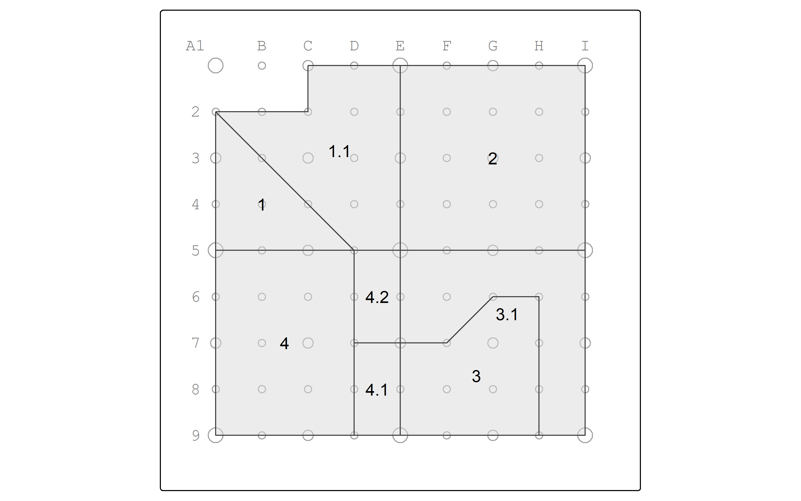

Chapter 4 Area-weighted re-aggregation
Suppose that we need to summarize population data from zones in the boundaries of the watersheds.
We only have one commonality between the two layers: geographic location.
To make matters more complicated, the boundaries are not neatly nested within one another.
In order to move data from the zones into the watersheds, we must assume that the population (and variables thereof) are equally distributed across the space of the zones.
4.2 Disaggregate
Let’s use the st_intersection operation to overlay zones and watersheds.
Resulting in the table…
| zone | pop | minority | poverty | s_area | name | |
|---|---|---|---|---|---|---|
| 1 | NW | 5300 | 4300 | 2000 | 875000 [m^2] | Moshassuck |
| 4 | SW | 4600 | 3600 | 1300 | 1000000 [m^2] | Moshassuck |
| 3 | SE | 4400 | 3200 | 1400 | 1000000 [m^2] | Narragansett |
| 4.1 | SW | 4600 | 3600 | 1300 | 1000000 [m^2] | Narragansett |
| 1.1 | NW | 5300 | 4300 | 2000 | 875000 [m^2] | Blackstone |
| 2 | NE | 4800 | 3800 | 1350 | 1000000 [m^2] | Blackstone |
| 3.1 | SE | 4400 | 3200 | 1400 | 1000000 [m^2] | Blackstone |
| 4.2 | SW | 4600 | 3600 | 1300 | 1000000 [m^2] | Blackstone |
and the map…
pointgrid_map +
fragments |> rownames_to_column(var = "id") |>
tm_shape() +
tm_polygons(fill_alpha = 0.5) +
tm_text("id")
Now, calculate area-weighted estimates.
We use an as.numeric function to discard the units data of m^2.
fragments <- mutate(fragments,
f_area = st_area(geom),
aw = as.numeric(f_area / s_area),
aw_pop = aw * pop,
aw_minor = aw * minority,
aw_pov = aw * poverty)
fragments |> st_drop_geometry() |>
knitr::kable(digits = 2) |>
kable_styling() |>
scroll_box(width = "100%", box_css = "border: 0px;")| zone | pop | minority | poverty | s_area | name | f_area | aw | aw_pop | aw_minor | aw_pov | |
|---|---|---|---|---|---|---|---|---|---|---|---|
| 1 | NW | 5300 | 4300 | 2000 | 875000 [m^2] | Moshassuck | 281250 [m^2] | 0.32 | 1703.57 | 1382.14 | 642.86 |
| 4 | SW | 4600 | 3600 | 1300 | 1000000 [m^2] | Moshassuck | 750000 [m^2] | 0.75 | 3450.00 | 2700.00 | 975.00 |
| 3 | SE | 4400 | 3200 | 1400 | 1000000 [m^2] | Narragansett | 468750 [m^2] | 0.47 | 2062.50 | 1500.00 | 656.25 |
| 4.1 | SW | 4600 | 3600 | 1300 | 1000000 [m^2] | Narragansett | 125000 [m^2] | 0.12 | 575.00 | 450.00 | 162.50 |
| 1.1 | NW | 5300 | 4300 | 2000 | 875000 [m^2] | Blackstone | 593750 [m^2] | 0.68 | 3596.43 | 2917.86 | 1357.14 |
| 2 | NE | 4800 | 3800 | 1350 | 1000000 [m^2] | Blackstone | 1000000 [m^2] | 1.00 | 4800.00 | 3800.00 | 1350.00 |
| 3.1 | SE | 4400 | 3200 | 1400 | 1000000 [m^2] | Blackstone | 531250 [m^2] | 0.53 | 2337.50 | 1700.00 | 743.75 |
| 4.2 | SW | 4600 | 3600 | 1300 | 1000000 [m^2] | Blackstone | 125000 [m^2] | 0.12 | 575.00 | 450.00 | 162.50 |
4.3 Reaggregate
Now it’s time to re-aggregate into watersheds.
In R, we accomplish this by grouping with group_by and summarizing with summarize.
We dissolve the polygons together with st_union.
Based on this, it may note be required to explicitly specify geom = st_union(geom)
https://bookdown.org/robinlovelace/geocompr/geometric-operations.html
watersheds_pop <- fragments |> group_by(name) |>
summarize(
sumpop = sum(aw_pop),
summinor = sum(aw_minor),
sumpov = sum(aw_pov),
geom = st_union(geom)
)Let’s calculate the percentage minority and percentage below poverty and view the resulting attribute table.
watersheds_pop <- mutate(watersheds_pop,
pctminority = round(summinor / sumpop * 100, 1),
pctpov = round(sumpov / sumpop * 100, 1))
watersheds_pop |> st_drop_geometry() |> knitr::kable(digits = 2)| name | sumpop | summinor | sumpov | pctminority | pctpov |
|---|---|---|---|---|---|
| Blackstone | 11308.93 | 8867.86 | 3613.39 | 78.4 | 32.0 |
| Moshassuck | 5153.57 | 4082.14 | 1617.86 | 79.2 | 31.4 |
| Narragansett | 2637.50 | 1950.00 | 818.75 | 73.9 | 31.0 |
And map the percentage in poverty in watersheds.
pointgrid_map +
watersheds_pop |>
tm_shape() +
tm_polygons(fill = "pctminority",
fill_alpha = 0.5,
fill.legend = tm_legend_hide()) +
tm_text("pctminority")Another approach could have summarized the attribute data without the geometry data, and then joined the summaries back to the watersheds by attribute.
First, drop the geometry data and summarize the attribute data.
watersheds_sum <- fragments |>
st_drop_geometry() |>
group_by(name) |>
summarize(
sumpop = sum(aw_pop),
summinor = sum(aw_minor),
sumpov = sum(aw_pov)
)
watersheds_sum |> knitr::kable(digits = 1)| name | sumpop | summinor | sumpov |
|---|---|---|---|
| Blackstone | 11308.9 | 8867.9 | 3613.4 |
| Moshassuck | 5153.6 | 4082.1 | 1617.9 |
| Narragansett | 2637.5 | 1950.0 | 818.8 |
Next, join the data to watersheds by attribute.
watersheds_pop <- watersheds |>
left_join(watersheds_sum, by = join_by(name)) |>
mutate(pctminority = round(summinor / sumpop * 100, 1),
pctpov = round(sumpov / sumpop * 100, 1))
watersheds_pop |> st_drop_geometry() |> knitr::kable(digits = 1)| name | sumpop | summinor | sumpov | pctminority | pctpov |
|---|---|---|---|---|---|
| Moshassuck | 5153.6 | 4082.1 | 1617.9 | 79.2 | 31.4 |
| Narragansett | 2637.5 | 1950.0 | 818.8 | 73.9 | 31.0 |
| Blackstone | 11308.9 | 8867.9 | 3613.4 | 78.4 | 32.0 |
And map the percentage of people in poverty in watersheds.